Análisis de residuos#
import joblib
import numpy as np
import pandas as pd
import matplotlib.pyplot as plt
from scipy.stats import normaltest, shapiro
from statsmodels.graphics.tsaplots import plot_acf
from statsmodels.tsa.stattools import bds
lags = [7, 14, 21, 28]
residuals_dict = {}
for lag in lags:
bundle = joblib.load(f"../app/model_lag{lag}.joblib")
info = bundle["info"]
y_true = np.array(info["reals"])
y_pred = np.array(info["preds"])
residuals = y_true - y_pred
residuals_dict[lag] = residuals
Diagnóstico de los Residuos por Horizonte de Pronóstico#
for lag, residuals in residuals_dict.items():
plt.figure(figsize=(10, 5))
for h in range(residuals.shape[1]):
plt.plot(residuals[:, h], label=f"Horizonte {h+1}")
plt.axhline(0, color='black', linestyle='--')
plt.title(f"Residuos por horizonte - Lag {lag}")
plt.xlabel("Observación")
plt.ylabel("Error (y_true - y_pred)")
plt.legend()
plt.grid(True)
plt.tight_layout()
plt.show()
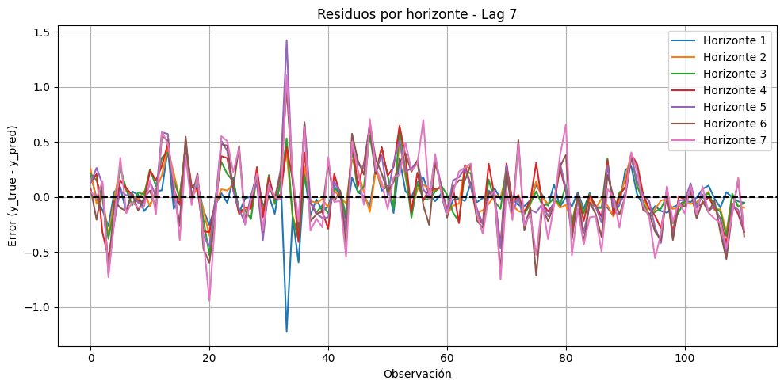
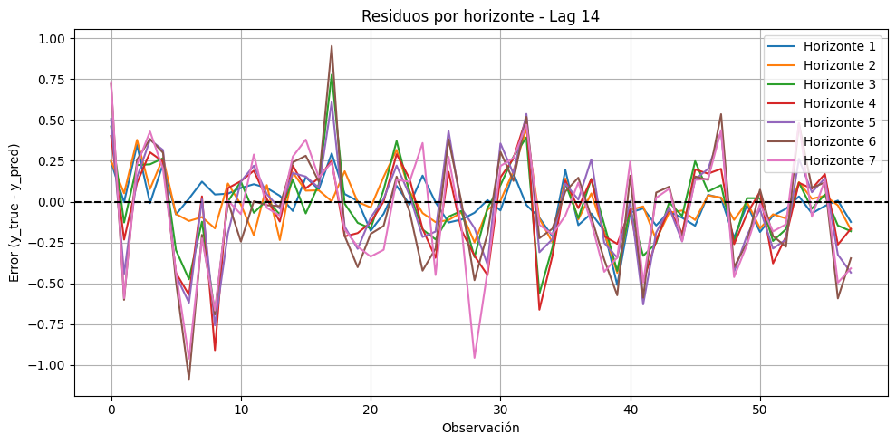
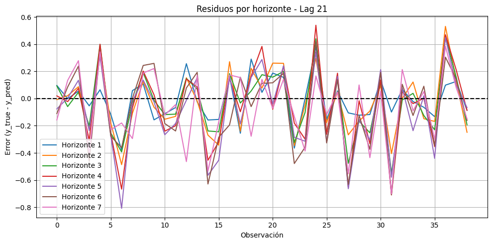
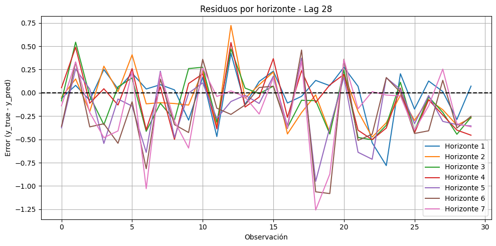
El objetivo de estos gráficos es evaluar si los errores (residuos) de cada modelo se comportan de manera aleatoria a lo largo del tiempo. Un buen modelo debería mostrar residuos que oscilen alrededor de cero sin patrones sistemáticos.
Modelos de 7 y 14 Días — Buen Comportamiento#
Los residuos están centrados en cero y fluctúan de forma aparentemente aleatoria.
No se observan tendencias ni ciclos evidentes.
Indican que estos modelos han capturado con éxito la estructura predecible de la serie, dejando solo ruido blanco.
Modelos de 21 y 28 Días — Rendimiento Inferior#
La magnitud de los errores es visiblemente mayor.
Los residuos muestran agrupamiento (clustering): períodos de errores grandes tienden a ocurrir juntos.
Esto refleja una incapacidad para capturar completamente la dinámica de la volatilidad, dejando patrones predecibles en los errores.
Conclusión General#
Los modelos con lags de 7 y 14 días son los más robustos y bien especificados:
Menor error promedio (según métricas de RMSE).
Residuos más aleatorios y consistentes con ruido blanco.
En contraste, los modelos de 21 y 28 días muestran deficiencias en su ajuste y dejan señales no captu
rmse_summary = []
for lag, residuals in residuals_dict.items():
for h in range(residuals.shape[1]):
rmse = np.sqrt(np.mean(residuals[:, h]**2))
rmse_summary.append({
"Lag": lag,
"Horizonte": h + 1,
"RMSE": round(rmse, 4)
})
rmse_df = pd.DataFrame(rmse_summary)
rmse_df.pivot(index="Lag", columns="Horizonte", values="RMSE")
| Horizonte | 1 | 2 | 3 | 4 | 5 | 6 | 7 |
|---|---|---|---|---|---|---|---|
| Lag | |||||||
| 7 | 0.1823 | 0.1647 | 0.2059 | 0.2412 | 0.2933 | 0.3082 | 0.3379 |
| 14 | 0.1398 | 0.1617 | 0.2497 | 0.2808 | 0.3042 | 0.3709 | 0.3564 |
| 21 | 0.1616 | 0.2264 | 0.2349 | 0.2998 | 0.3057 | 0.3010 | 0.2750 |
| 28 | 0.2532 | 0.2763 | 0.2999 | 0.3034 | 0.3692 | 0.4418 | 0.4310 |
Normalidad de residuos#
normality_results = []
for lag, residuals in residuals_dict.items():
for h in range(residuals.shape[1]):
res = residuals[:, h]
stat_dag, p_dag = normaltest(res)
stat_shap, p_shap = shapiro(res)
normality_results.append({
"Lag": lag,
"Horizonte": h + 1,
"D’Agostino p": round(p_dag, 4),
"Shapiro p": round(p_shap, 4)
})
pd.DataFrame(normality_results)
| Lag | Horizonte | D’Agostino p | Shapiro p | |
|---|---|---|---|---|
| 0 | 7 | 1 | 0.0000 | 0.0000 |
| 1 | 7 | 2 | 0.0028 | 0.0002 |
| 2 | 7 | 3 | 0.0390 | 0.0264 |
| 3 | 7 | 4 | 0.5399 | 0.5476 |
| 4 | 7 | 5 | 0.0000 | 0.0002 |
| 5 | 7 | 6 | 0.4163 | 0.7272 |
| 6 | 7 | 7 | 0.2818 | 0.6348 |
| 7 | 14 | 1 | 0.0417 | 0.0638 |
| 8 | 14 | 2 | 0.1581 | 0.3667 |
| 9 | 14 | 3 | 0.0941 | 0.4064 |
| 10 | 14 | 4 | 0.1003 | 0.1103 |
| 11 | 14 | 5 | 0.8504 | 0.9401 |
| 12 | 14 | 6 | 0.5650 | 0.9292 |
| 13 | 14 | 7 | 0.5515 | 0.5819 |
| 14 | 21 | 1 | 0.8308 | 0.7276 |
| 15 | 21 | 2 | 0.7617 | 0.9349 |
| 16 | 21 | 3 | 0.9944 | 0.7114 |
| 17 | 21 | 4 | 0.7435 | 0.6347 |
| 18 | 21 | 5 | 0.4883 | 0.5682 |
| 19 | 21 | 6 | 0.2422 | 0.1424 |
| 20 | 21 | 7 | 0.3552 | 0.2406 |
| 21 | 28 | 1 | 0.0043 | 0.0120 |
| 22 | 28 | 2 | 0.0484 | 0.1547 |
| 23 | 28 | 3 | 0.4262 | 0.1620 |
| 24 | 28 | 4 | 0.3914 | 0.1678 |
| 25 | 28 | 5 | 0.6157 | 0.6158 |
| 26 | 28 | 6 | 0.7554 | 0.2488 |
| 27 | 28 | 7 | 0.0574 | 0.0470 |
El objetivo de esta prueba es determinar si los errores (residuos) del modelo siguen una distribución normal. Un p-valor alto (> 0.05) indica que los residuos no difieren significativamente de la normalidad, lo cual es deseable porque implica que el modelo ha capturado de forma adecuada la naturaleza estocástica de los datos.
Modelos de 14 y 21 Días — Residuos Estadísticamente Robustos#
Modelo de 21 días (Mejor Comportamiento Diagnóstico):
Supera la prueba de normalidad en todos los horizontes.
Sus residuos presentan p-valores consistentemente altos.
Los errores se asemejan a una distribución gaussiana bien definida.
Modelo de 14 días (Excelente Comportamiento):
Residuos normales en casi todos los horizontes.
Únicamente muestra un resultado limítrofe en el horizonte de 1 día.
Modelos de 7 y 28 Días — Residuos No Normales#
Modelo de 7 días:
Aunque es el más preciso en términos de RMSE, falla la prueba de normalidad en los horizontes 1, 2, 3 y 5 días.
Sus p-valores son prácticamente cero, lo que indica residuos con distribución no normal.
Modelo de 28 días:
Presenta problemas en el horizonte 1.
En el horizonte 7 falla específicamente la prueba de Shapiro-Wilk, confirmando que sus residuos no son normales.
Síntesis: Precisión vs. Normalidad#
Estos resultados ponen de manifiesto un compromiso clásico en series temporales financieras:
Modelo de 7 días → Máxima precisión predictiva (menor RMSE):
Captura de manera más fiel la magnitud de la volatilidad.
Sin embargo, al enfrentarse a eventos extremos (colas pesadas), los residuos resultan no normales.
Modelo de 21 días → Menor precisión, mayor normalidad:
Sus predicciones son excesivamente suavizadas.
Este efecto de suavizado hace que los residuos se acerquen más a una distribución normal, aunque con menor poder predictivo.
ACF#
for lag, residuals in residuals_dict.items():
for h in range(residuals.shape[1]):
plt.figure(figsize=(6, 3))
plot_acf(residuals[:, h], lags=20)
plt.title(f"ACF - Lag {lag}, Horizonte {h+1}")
plt.tight_layout()
plt.show()
<Figure size 600x300 with 0 Axes>
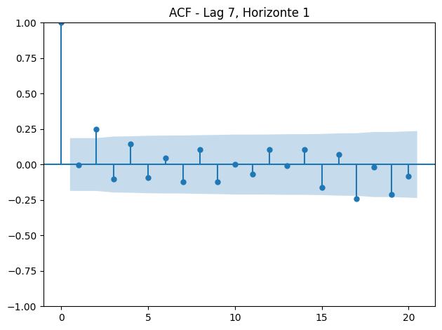
<Figure size 600x300 with 0 Axes>
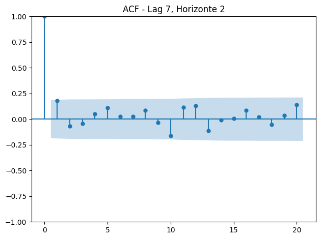
<Figure size 600x300 with 0 Axes>
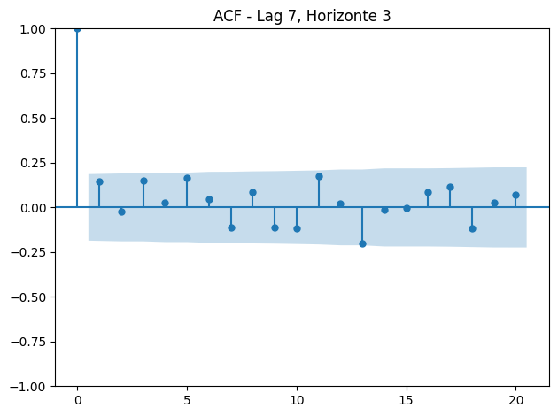
<Figure size 600x300 with 0 Axes>
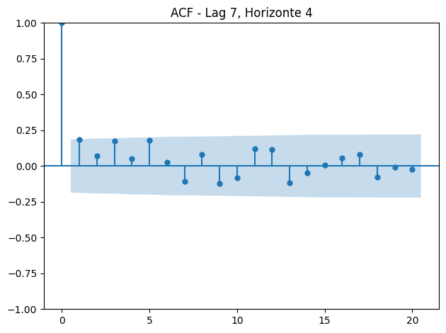
<Figure size 600x300 with 0 Axes>
<Figure size 600x300 with 0 Axes>
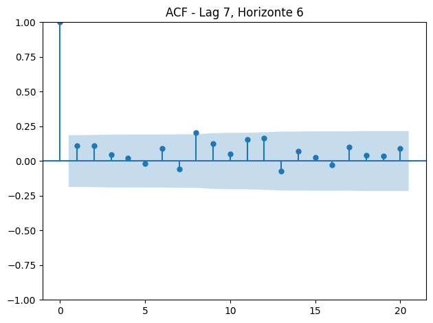
<Figure size 600x300 with 0 Axes>
<Figure size 600x300 with 0 Axes>
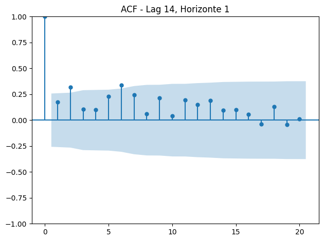
<Figure size 600x300 with 0 Axes>
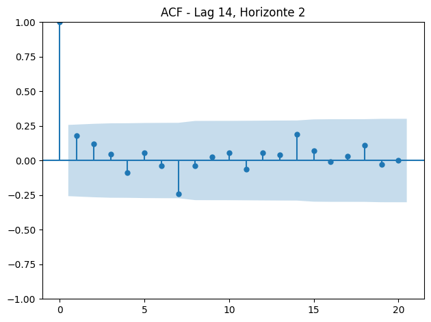
<Figure size 600x300 with 0 Axes>
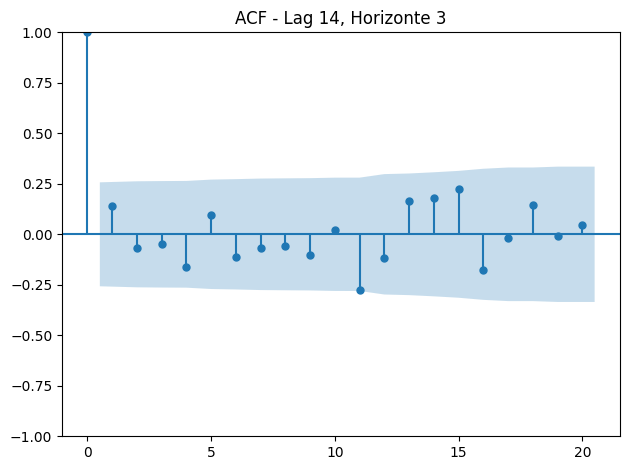
<Figure size 600x300 with 0 Axes>
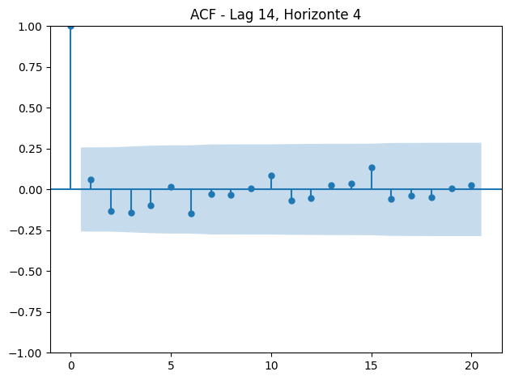
<Figure size 600x300 with 0 Axes>
<Figure size 600x300 with 0 Axes>
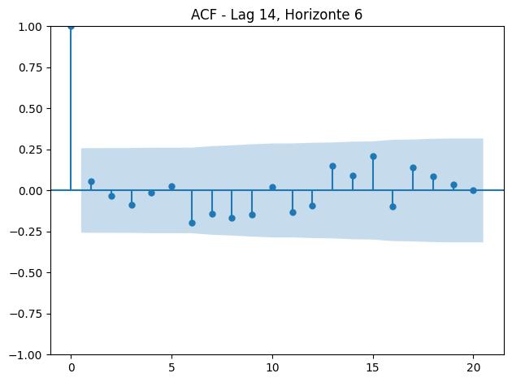
<Figure size 600x300 with 0 Axes>
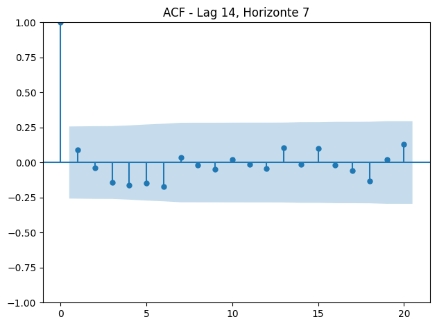
<Figure size 600x300 with 0 Axes>
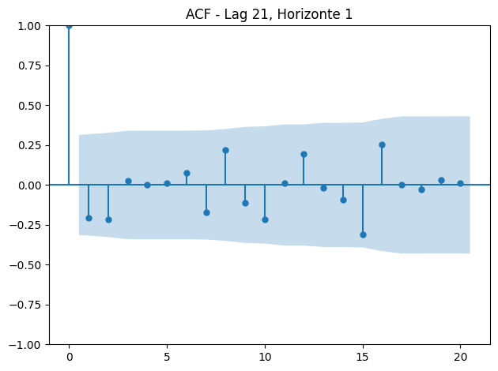
<Figure size 600x300 with 0 Axes>
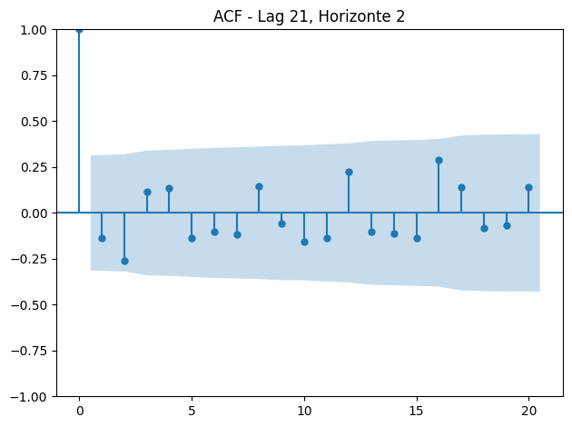
<Figure size 600x300 with 0 Axes>
<Figure size 600x300 with 0 Axes>
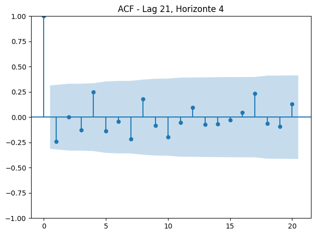
<Figure size 600x300 with 0 Axes>
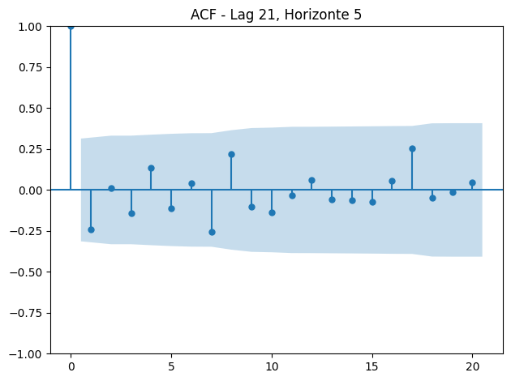
<Figure size 600x300 with 0 Axes>
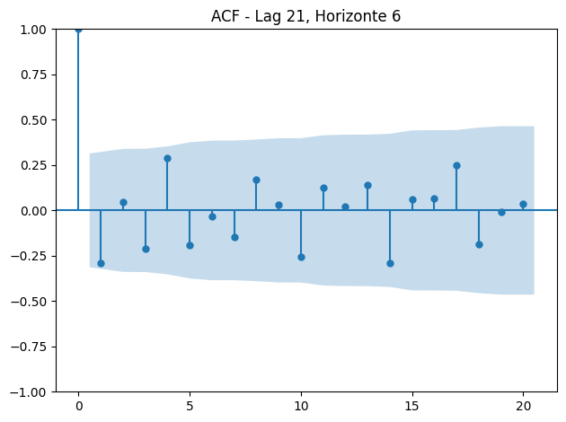
<Figure size 600x300 with 0 Axes>
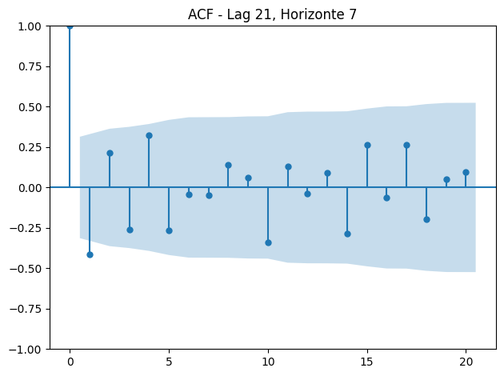
<Figure size 600x300 with 0 Axes>
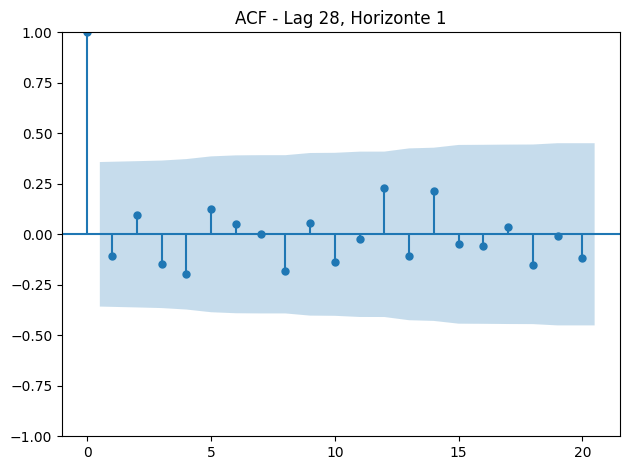
<Figure size 600x300 with 0 Axes>
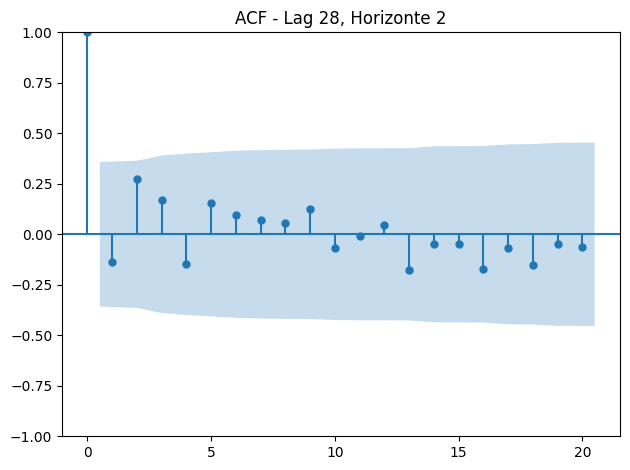
<Figure size 600x300 with 0 Axes>
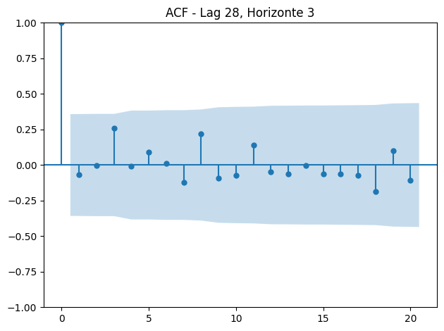
<Figure size 600x300 with 0 Axes>
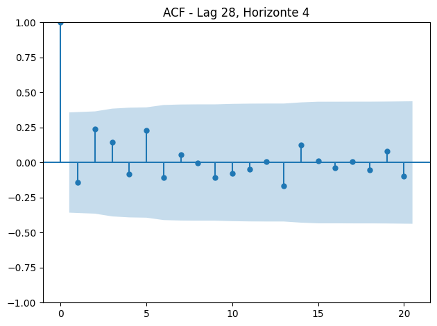
<Figure size 600x300 with 0 Axes>
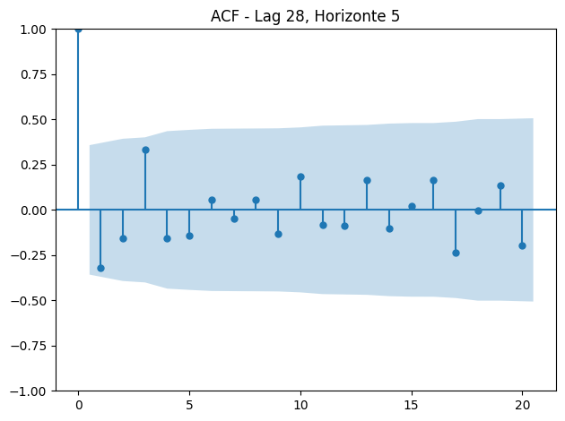
<Figure size 600x300 with 0 Axes>
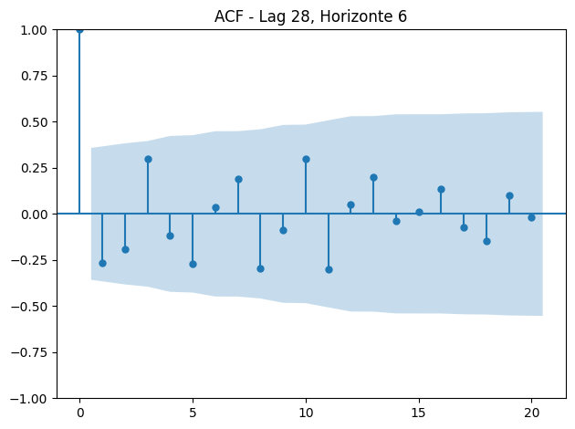
<Figure size 600x300 with 0 Axes>
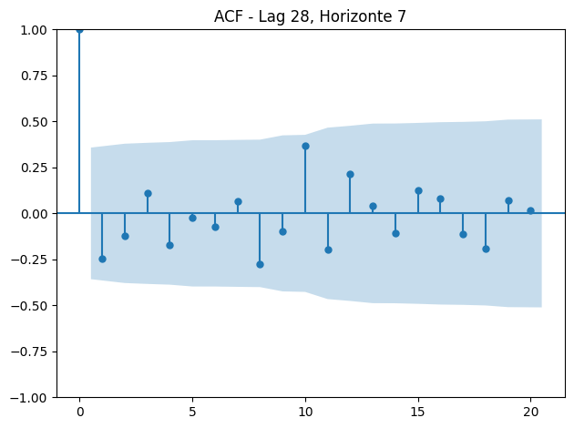